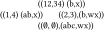
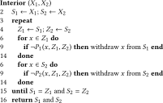
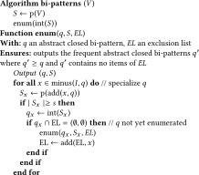

This is a web copy of https://doi.org/10.1145/3184558.3191568 Published in WWW2018 Proceedings © 2018 International World Wide Web Conference Committee, published under Creative Commons CC By 4.0 License. The modifications from the original are solely to improve HTML aiming to make it Findable, Accessible, Interoperable and Reusable. augmenting HTML metadata and avoiding ACM trademark. To reference this HTML version, use:
Permalink: https://w3id.org/oa/10.1145/3184558.3191568
DOI: https://doi.org/10.1145/3184558.3191568
WWW '18: Proceedings of The Web Conference 2018, Lyon, France, April 2018
In two-mode networks there are two kinds of vertices, i.e objects, each being possibly described with a proper attribute set. This means that to select a subnetwork according to vertex descriptions we have to consider a pair of vertex subsets. A common technique is to extract from a network an essential subnetwork, the core subgraph of the network. Formal Concept Analysis and closed pattern mining were previously applied to networks with the purpose of reducing extensions of patterns to be core subgraphs. To apply this methodology to two-mode networks, we need to consider the two vertex subsets of two-mode cores and define accordingly abstract closed bi-patterns. Each component of a bi-pattern is then associated to one mode. We also show that the same methodology applies to hub-authority cores of directed networks in which each vertex subset is associated to a role (in or out). We illustrate the methodology both on a two-mode network of epistemological data and on a directed advice network of lawyers.
CCS Concepts: • Information systems → Data mining; • Human-centered computing → Social networks;
ACM Reference Format:
Henry Soldano, Guillaume Santini, Dominique Bouthinon, Sophie Bary, and Emmanuel Lazega. 2018. Bi-Pattern Mining of Two Mode and Directed Networks. In WWW '18 Companion: The 2018 Web Conference Companion, April 23–27, 2018, Lyon, France. ACM, New York, NY, USA 8 Pages. https://doi.org/10.1145/3184558.3191568
The aim of this article is to extend the Closed Pattern mining (CPM) and Formal Concept Analysis (FCA) methodologies in order to investigate attributed two-mode networks as well as directed networks according to the in and out roles of their vertices. This follows previous work in which these methodologies were applied to undirected and directed graphs. Note that there is no difference between the two methodologies in that they enumerate the same closed patterns, however FCA is also interested in the structure of this result as a conceptual structure.
Most of the work in social and complex networks analysis consider unlabelled and undirected networks and is concerned by what may be said about the topological structure of the network. Various ways have been proposed to extract interesting subgraphs. In particular in the core-periphery model the network is made of a core subgraph, i.e. a dense subgraph whose vertices are highly connected, together with its periphery, made of vertices highly connected to the core, but poorly connected between them [6]. The first formal core definition was the k-core subgraph which is the greatest subnetwork whose vertices all have degree at least k in the subnetwork [16]. By changing the topological property we obtain various core definitions[2]. Core definitions have also be considered in directed networks. In particular a core definition has been proposed in [10] to investigate collaboration within directed networks. The requirement is then that both indegrees and outdegrees of vertices have to be higher than thresholds. A different kind of core is related to the Hub-Authority idea which considers that a vertex may be prominent in a network according to only one or both of its out or in roles [11]. The HA-core has been recently defined in order to express this idea [20].
Various recent works on complex networks analysis take into account information provided as labels about vertices or edges. The network is then called a labelled or attributed network. This leads to mine and rank patterns as pairs of constraints on topology and labels [8, 14, 17]. Recently a new approach has been presented extending CPM and FCA to attributed graphs by reducing the vertex subset in which an attribute pattern occur, using interior operators [18]. Such an operator reduces then a vertex subset to its core subset. In particular the HA-core mentioned above was defined to investigate this way an advice network in a lawyer firm [20].
Two-mode networks are bipartite graphs made of two vertex sets representing in general two kind of entities, for instance actors and movies, together with edge relating entities of each kind, as for instance ”G. Clooney acted in Ocean's Eleven”. Until recently they were mostly investigated by extracting single mode networks, relating for instance actors to actors who participated to the same movies. However in [5] the authors advocated the direct investigation of two-mode networks, and core definitions for two-mode networks have been recently proposed by Cerinsek and Batagelj [7]. When such a network is attributed each kind of vertex is described according to a proper attribute set. This means that we need patterns made of two attribute subsets, we call bi-patterns, that select two vertex subsets. In this article we investigate the abstract bi-concept lattices resulting from the adaptation of the abstract FCA methodology to attributed two-mode networks.This allows for instance to require actors to be American and movies to be recent, but only consider vertices of a subnetwork in which each actor played in at least 2 movies and each movie is linked to at least 3 actors. Such bi-patterns may also be defined in the directed case when considering subgraphs in which a pattern is associated to each of the in or out vertex roles.
The closed pattern mining and Formal Concept Analysis (FCA) frameworks consider the occurrences of patterns in a set of objects V. The pattern language L is partially ordered in such a way that if q′ ≥ q, i.e q′ is more specific than q, then whenever q′ occurs in object v, q also occurs in v. The set of occurrences ext(q) of a pattern q, i.e. the object subset in which q occurs, is called its extension in V. The purpose common to closed pattern mining and FCA is then to represent, in a condensed way, the set of definable subsets of V, i.e. subsets which are pattern extensions.
Enumerating the definable subsets of V comes down to enumerate the classes of the relation stating as equivalent two patterns with same extension. The more favorable situation is the one in which there is a unique most specific pattern in each class. This happens whenever the pattern language is a complete lattice. In original FCA the pattern language is the powerset of a set of binary attributes, however FCA has more recently been extended to more general languages called pattern structures [9]. The most specific pattern of a class may then be accessed from any pattern q of the same class through a closure operator. We define hereunder closure operators together with their dual interior operators.
Let S be an ordered set and f: S → S a self map such that for any x, y ∈ S, f is monotone, i.e. x ≤ y implies f(x) ≤ f(y) and idempotent, i.e. f(f(x)) = f(x), then if f(x) ≥ x, f is called a closure operator while if f(x) ≤ x, f is called an interior operator.
Formal Concept Analysis goes beyond enumeration of closed patterns: FCA considers knowledge discovery as the process of discovering the ordering structure of the data to analyse. It relies primarily on the Galois connection1 between the pattern language and the extensional space, i.e. the powerset of objects:
Let (L, ≤) be a lattice called the pattern language, V be a set of objects and d: V → L be an operator that describes the object x as an element d(x) of L. Let ext(q) = {x ∈ V∣q ≤ d(x)} define the subset of objects in which pattern q occurs. Then
Concept lattices are consequently defined as the ordering of concepts, i.e. maximal pairs of elements from 2 V and L. In what follows we will use interior operators to define the more general framework of abstract concept lattices. Interior operators were introduced in FCA to reduce the concept lattice size, either by reducing the pattern language [9] or the extensional space [15]. First we recall a general result [15, 21] together with a corollary defining abstract concept lattices:
Let X and L be two lattices, (int, ext) be a Galois connection on (X, L) and p be an interior operator on X. Let A = p[X], then (int, p○ext) is a Galois connection on (A, L).
i) f = int○p○ext is a closure operator on L
ii) h = p○ext○int is a closure operator on A
iii) h[A] and f[L] are two anti-isomorphic lattices and the lattice of the (e, c) pairs where c = int(e) and e = p○ext(c) form a lattice, ordered following A, isomorphic to h[A].
In such a concept (e, c), e is called its (abstract) extent while c is its intent i.e. the abstract closed pattern whose abstract extension p○ext(c) is e.
As the new equivalence relation is coarser, i.e. ext(q) = ext(q′) implies p○ext(q) = p○ext(q′), there is less abstract closed patterns than closed patterns, thus leading to a more condensed representation of patterns occurring on V. Note the useful one to one correspondance between interiors operators on a lattice and their range (see [3] for the dual result on closure operators):
Let X be a complete lattice. A subset A of X is the range of an interior operator on X if and only if A is closed under join. The interior operator f: X → X is then unique and defined as f(x) = ∨{a ∈ A∣a ≤ x} a.
A is closed under join means here that the join of any subset, including the empty subset ∅, belongs to A. We further call A an abstraction of X, hence we may define abstract concept lattices through interior operators as well as abstractions.
We exemplify hereunder the closure operator f = int○ext returning closed patterns in the standard closed itemset mining case. We further write subsets as strings, i.e. 12 stands for {1, 2}. Patterns are subsets of I = {a, b, c, d}, objects in V = {1, 2, 3} are described as d[V] = {a, ab, abc}. We have then for instance ext(b) = 23 and as a consequence, f(b) = d(2)∩d(3) = ab∩abc = ab, f(abc) = d(3) = abc and f(d) = abcd. The latter closure means that d is in the set of patterns with empty support set whose greatest element is abcd.
We consider the operator p on 2 V such that p(e) = e except for singletons that are projected on the empty set: p({1}) = p({2}) = p({3}) = ∅. We have then p○ext(ab) = p({2, 3}) = {2, 3} and as a consequence f(ab) = abc as in the non-abstract case. However p○ext(abc) = p({3}) = ∅ and now f(abc) = abcd as abcd is the greatest element with empty abstract support set.
The corresponding abstraction A = p[2123] is generated by union closure of size 2 subsets {12, 23, 13} and it is then straightforward that for any e, p[e] is the greatest subset of A smaller than or equal to e. For instance, p[12] = 12 as 12 belongs to A while p[1] = ∅ as no element of A except ∅ is included in subset 1.
Now, consider the object set as the vertex set V of some graph whose vertices are each labelled by a description in a pattern language. Defining the essential part of a graph, i.e. its core subgraph, relies on all vertices satisfying some boolean property. Let G = (V, E) be a graph. Vertex properties are defined as P: V × 2 V → {true, false} mappings where P(v, X) is true whenever vertex x satisfies some condition within the subgraph GX induced by the vertex subset X. The core subgraph of a graph (V, E) is then defined as the subgraph $G_{V^{\prime }}$ induced by the largest vertex subset V′, also called its core, whose vertices v all have property P(v, V′).
To define a core, we need P to be such that there does exist such a largest vertex subset with property P. This is true whenever P is monotone i.e. for any x ∈ X 1⊆X we have that P(x, X 1) and X 2⊇X 1 implies P(x, X 2) [2, 18]. The following result allows then to apply abstract FCA to graphs:
The operator that reduces a vertex subset V′ of a graph G to the core of the subgraph $G_{V^{\prime }}$ is an interior operator on 2 V .
As a result, abstract concept lattices together with closure operators are defined in such a way that each extent p○ext(c) is a core while the associated intent c is the most specific pattern that occurs in this core. Abstract closed pattern mining has been applied to undirected networks [19] as well as directed networks [20]. The next section is first motivated by applying FCA to two-mode networks, i.e. networks in which an edge relates a vertex from a vertex set V 1 to a vertex from a vertex set V 2. The vertices may then be described in two different pattern languages L 1 and L 2.
We consider lattice products both regarding extensions and pattern languages and will obtain a new Galois connection whose associated lattice we call a bi-concept lattice.
Lattice products are also lattices according to the so-called cartesian ordering:
Let (X 1, ≤1, ∨1, ∧1) and (X 2, ≤2, ∨2, ∧2) be two lattices, and consider the cartesian product X = X 1 × X 2 together with the binary relation ≤ defined as (x 1, x 2) ≤ (y 1, y 2) iff x 1 ≤ 1 y 1 and x 2 ≤ 2 y 2. Then (X, ≤, ∨, ∧) is a lattice with join and meet defined as:
We may then build a Galois connection on lattices products (see proof in Appendix A):
Let X = X 1 × X 2 and L = L 1 × L 2 be two lattices product, and let (int 1, ext 1) and (int 2, ext 2) be Galois connections on respective lattices pairs (X 1, L 1) and (X 2, L 2). Consider the mappings int and ext on X and L such that:
then (int, ext) define a Galois connection on (X, L)
In what follows we consider two Galois connections as defined in Proposition 2.2. We have then $X=(2^{V_1},2^{V_2})$ :
The lattice of the Galois connection on lattice products (X, L) is called a bi-concept lattice, and each (x, l) pair such that l = int(x) and x = ext(l) is called a bi-concept with intent l and extent x.
Abstract FCA uses an interior operator to obtain smaller concept lattices, and we will allow the interior operator to create the dependency between the two components of the extent which is necessary to represent cores of two-mode networks.
Proposition 2.3 states that applying an interior operator to a lattice involved in a Galois connection preserves the connection. The interior operator in the bi-concept case applies to a pair of object subsets, i.e. has domain $X=2^{V_1}\times 2^{V_2}$ :
Let p be an interior operator on X and (int, ext) be the Galois connection on (X, L) associated to a bi-concept lattice. Then the lattice of the Galois connection (int, p○ext) on (p[X], L) is called the abstract bi-concept lattice associated to p.
We examplify hereunder these definitions. According to Proposition 2.5 we may derive an interior operator p from a subset of X closed under join. We will hereunder make use of this property to represent the interior operator.
Let V 1 = {1, 2} and V 2 = {3, 4} be two object sets and $X_1=2^{V_1}=\lbrace \emptyset , 1,2,12\rbrace$ while $X_2=2^{V_2} =\lbrace \emptyset , 3,4,34\rbrace$ . Objects of V 1 are labelled by subsets of I 1 = {a, b, c} while objects of V 2 are labelled by subsets of I 2 = {w, x}. The descriptions of the objects from V 1 and V 2 respectively as subsets of I 1 and I 2 are as follows:
Consider the abstraction {(∅, ∅), (1, 4), (2, 3), (12, 34)} and the associated interior operator p. Now, we have that
We obtain then the following abstract bi-concept lattice:
 The set of abstract closed-bi-patterns with extent different from (∅, ∅) is then {(b, x), (ab, x), (b, wx)}.
In what follows we consider the subnetwork induced by a pair of vertex subsets (W 1, W 2). When considering W 1⊆V 1 and W 2⊆V 2 we simply write (W 1, W 2) ≤ (V 1, V 2) or call (W 1, W 2) a subset pair of (V 1, V 2). The following definition may be applied to a two-mode network (V 1, V 2, E) as well as to a single mode network by considering V = V 1 = V 2.
Let G = (V 1, V 2, E) be a network, the subnetwork induced by the subset pair (W 1, W 2) is the network $G_{(W_1,W_2)}=(W_1,W_2,E^{\prime })$ where E′ is the edge subset relating vertices from W 1 to vertices from W 2.
We need to define monotone properties in this context:
$P_1: V_1\times 2^{V_1} \times 2^{V_2} \rightarrow \lbrace true,false\rbrace$ is said monotone if and only if for any w ∈ V 1 and any subset pairs (W 1, W 2) and $(W_1^{\prime },W_2^{\prime })\ge (W_1,W_2)$ ,
In the same way P 2 on $V_2\times 2^{V_1} \times 2^{V_2}$ is monotone whenever for any w ∈ W 2, P 2(w, W 1, W 2) implies $P_2(w,W_1^{\prime },W_2^{\prime })$
Cores will then be defined thanks to the following result (see proof in Appendix A):
Let (P 1, P 2) be a pair of monotone properties, and (W 1, W 2) be a subset pair of (V 1, V 2). Then there exists a greatest subset pair (S 1, S 2) ≤ (W 1, W 2) such that P 1(v 1, S 1, S 2) holds for all elements v 1 of S 1 and P 2(v 2, S 1, S 2) holds for all elements v 2 of S 2.
We will further call this subset pair (S 1, S 2) the core subset pair of (W 1, W 2) and define core subgraphs accordingly:
Let G = (V 1, V 2, E) be a network, and (P 1, P 2) be a pair of monotone properties. The subnetwork $G_{(S_1,S_2)}$ induced by the core subset pair (S 1, S 2) is called the core subnetwork of G.
We benefit then from a result similar to Proposition 2.7:
The operator that reduces a subset pair (W 1, W 2) ≤ (V 1, V 2) to its core subset pair (S 1, S 2) is an interior operator on $2^{V_1}\times 2^{V_2}$ .
We first define the h-a BHA-core of a two-mode network:
The h-a BHA-core of the network G is defined through the following pair of core properties:
P 1 and P 2 are clearly monotone and therefore the h-a HA-core is properly defined. This core definition is equivalent when considering two-mode networks to the definition presented by Cerinsek and Batagelj [7] in which the p-q BHA-core is called the (p, q)-core, and more generally any such generalized two-mode core may be rewritten according to a pair of core properties. We may also consider a single mode network G(V, E) as a two-mode network G(V, V, E) and consider subgraph induced by a pair of vertex subsets according to Definition 4.1. We may then consider core definitions of undirected and directed networks in which vertices may have two roles. In the directed case we relate hereunder this HBA-core to the hub-authority core defined in [20]:
Let G = (V, E) be a directed network rewritten as the two-mode network GT = (V, V, E). Let then p BHA be the interior operator associated to the h-a BHA-cores of GT and consider pHBA (W, W) = (S 1, S 2), then S 1∪S 2 is the h-a HA-core of the subgraph GW induced by W, S 1 is its hub vertex subset while S 2 is its authority vertex subset.
This means that we have generalized hub-autority cores by extracting them from subgraphs induced by pairs of vertex subsets W 1, W 2 in such a way that hubs belong to W 1 while authorities belong to W 2. This will be illustrated in Section 6.2. We give hereunder an example with a two-mode network.
We consider the two-mode network pictured on the leftmost part of Figure 1. The two vertex sets are V 1 = {l 1, l 2, l 3} and V 2 = {r 1, r 2, r 3}. Vertices of V 1 are labelled by subsets of I 1 = {a, b, c, d} while vertices of V 2 are labelled by subsets of I 2 = {w, x, y, z}.
The most general bi-pattern (∅, ∅) occurs in the whole network. Its 2-2 BHA-core is displayed in the middle of Figure 1 and is induced by (l 1 l 2, r 1 r 2 r 3). We have then as the corresponding closed bi-pattern int(l 1 l 2, r 1 r 2 r 3) = (ab, wx). When adding attributes to this bi-pattern we obtain subnetworks whose 2-2 HA-core is empty, except when adding y to wx. The corresponding bi-pattern (ab, wxy) occurs in (l 1 l 2 l 3, r 1 r 3) whose corresponding 2-2 BHA-core is displayed in the rightmost part of Figure 1 and has vertex sets pair (l 1 l 2, r 1 r 3). This bi-pattern is closed as nothing can be added without losing some vertex. Furthermore, adding anything to (ab, wxy) result in an empty 2-2 HA-core. The corresponding bi-concept lattice is therefore the total ordering of the 3 bi-concepts ((l 1 l 2, r 1 r 2 r 3), (ab, wx)), ((l 1 l 2, r 1 r 3), (ab, wxy)) and ((∅, ∅), abcd, wxyz).
We present now a generic algorithm to compute the interior p(X 1, X 2) = (S 1, S 2) associated to the pair of monotone properties (P 1, P 2). It is basically a rewriting of the algorithm proposed in [7] when V 1∩V 2 = ∅ and also corresponds in the directed case, when considering X 1 = X 2, to the algorithm proposed in [20] to compute the HA-core. Let n be the number of vertices and m be the number of edges, the algorithm performs at most n iterations while the inner loop need $\mathcal {O}(m)$ operations as far as p needs only to access the neighbourhood of of each vertex. The overall complexity is then $\mathcal {O}(m*n)$ . A more efficient algorithm in $\mathcal {O}(m * \max (\Delta , \log n)$ , where Δ is the highest degree within the graph, is obtained by adapting the variant cited in [2] which uses two heaps as data structures for nodes of each mode.

We focus now on abstract closed bi-pattern enumeration. Building the bi-concept lattice has therefore to be a post-processing step. The enumeration follows the same process as abstract closed pattern enumeration, i.e. the efficient divide and conquer scheme described in [4] as implemented in the program MinerLC2. The adaptation is straightforward: the closure operator is now fA = int○p○ext where p is the interior operator as defined above. To perform enumeration of abstract closed bi-patterns we specialize each abstract closed bi-pattern (q 1, q 2) by adding either an element of I 1 to q 1 or an element of I 2 to q 2.
The algorithm bi-patterns is described hereunder with the following notations: Let q = (q1, q2) be a bi-pattern,i) add(i, q) returns either (q 1∪i, q 2) when i ∈ I 1 or (q 1, q 2∪i) when i ∈ I 2, ii) minus(I, q) returns the set of items which belong neither to the left part nor to the right part of the bi-pattern q = (q 1, q 2), i.e. minus(I, q) =I 1∖q 1∪I 2∖q 2. iii) The exclusion pair list EL is a subset pair of (I 1, I 2).

We follow on from Example 4.8 and consider s = 1 as a minimal support. The algorithm starts by computing the 2-2 HA-core Gc of the whole graph G. G and Gc are displayed respectively on the left and on the middle of Figure 1. Function enum is then called with the core closed pattern q = int(vs(Gc ))= int({l 1, l 2, r 1, r 2, r 3}) = (lalb , rarb ) and first outputs the pair ((lalb , rarb ), {l 1, l 2, r 1, r 2, r 3}), and then adds to q in turn each item in minus(I, q) = {lc , ld , rc , rd }:
As enum ends bi-patterns also ends. The two closed bi- patterns that have been output are the most specific bi-patterns that occur respectively in the 2-2 B-cores, displayed on the middle and the right of Figure 1.
The implementation is an adaptation of the minerLC software. The first experiment concerns a new two-mode network while the second concerns a well-known directed social network available on the minerLC web page (see above).
We are currently investigating a two-mode network concerning data related to a MNHN-IRD program (called MUSORSTOM then Tropical Deep-Sea Benthos) of expeditions to explore the deep-sea in the Indo-West Pacific region, since 1976 [1]. In this network 596 edges relate 74 campaigns to 268 participants to these campaigns. Campaigns are described following their date and location, the type of fishing gear (dredge, trawl), the objectives of the campaign as well as species described during the campaign. Regarding participants the attributes concern the location of the institution they belong to, their scientific domain as well as bibliometrics. We have in particular searched abstract bi-concepts associated to a 3-4 HA cores (subnetworks whith participants to at least 3 campaigns, and campaigns with at least 4 participants). As an illustration Figure 2 displays two bi-patterns whose intents mainly differ on their campaign component. The subnetworks, before core reduction, are made of respectively 132 and 135 vertices while core subnetworks represent extents of respectively 80 and 76 vertices. Vertices are displayed at their original position in the whole network according to a standard force directed drawing [12]. The difference between the extents are mainly in the left part of the network, which means that differences concern campaigns and participants which are strongly related within the original network.
This dataset concerns a network study of corporate law partnership that was carried out from 1988 to 1991 in New England [13]. It concerns 71 attorneys (partners and associates). In the Advice network3, each attorney is described using various attributes. and 892 directed edges xy relate attorney x who goes to attorney y for basic professional advice. This network was investigated in [20] applying the abstract closed pattern methodology using the HA-core definition. We use here the attributed network as found in the minerLC web page (see above).
We apply our bi-pattern methodology using the 9-9 BHA-core which corresponds to a 9-9 HA-core as far as we have equal input vertex subsets W 1 = W 2 = W (see Prop. 4.7). As an example, we consider the following closed bi-pattern q = (q 1, q 2) where
q 1=“25 < Age ≤ 50, Seniority ≤ 25” and
q 2=“30 < Age ≤ 65, 5 < Seniority”. This pattern corresponds to the abstract closed bi-pattern with least homogeneity among the 82 abstract closed bi-patterns. Homogeneity is defined as the Jaccard similarity between the two components of its (non abstract) extension: h(q) = |ext1(q 1)∩ext2(q 2)|/|ext1(q 1)∪ext2(q 2)|. Our motivation is to consider bi-patterns which are unlikely to appear as cores of single patterns. This way bi-pattern analysis is complementary to single pattern analysis. We observe that 68 vertices over the 71 vertices of the whole advice network satisfy at least one of q 1 and q 2 i.e. satisfy q 1∩q 2 = “25 < Age ≤ 65”. Only 24 vertices among these 68 satisfy both single patterns resulting in homogeneity h(q) = 0.368. The 9-9 BHA-core subgraph of q is much smaller, with 33 vertices 13 of which are both in H and A vertex subsets. Note that the 9-9 HA core associated to “25 < Age ≤ 65” is much larger: it contains 50 vertices with |H∩A| = 23 and also is the 9-9 HA-core of the whole subgraph. This BHA-core subgraph displayed Figure 3 represents a group of young lawyers seeking advices from elder lawyers who are in the firm for at least five years.
We also experimented with a weaker 6-6 BHA-core abstraction, then resulting in 32010 abstract closed bi-patterns among which 262 have homogeneity less than 0.1. There were in particular 7 bi-patterns with null homogeneity, one among which represents lawyers from Boston whose law domain is litigation. In this bi-pattern 7 associate lawyers with age between 26 and 45 and seniority no more than 5 years go for advice to 7 older lawyers (both partners and associates) with age between 31 and 60 and seniority more than 6. Finally we conduct experiments involving 4-4 BHA-cores resulting in 293 490 bi-patterns, found in few minutes4, to be compared to the 930 single patterns observed in [20]. Indeed bi-pattern mining on directed networks may generate much more results than single pattern mining though focussing on low homogeneities lightens this burden. Selecting unexpected pattern, adapting the method from [20], should also be efficient though we still need some way, as the MDL pattern selection scheme (see for instance [22]), to sample among bi-patterns associated to similar cores.
First note that we did not use any constraint on the cores sizes, i.e. we considered s = 1 as a minimum size threshold. This is a rather general situation: the topological constraint associated to the core definition allows a better exploration of patterns occurrences as strengthening the constraint, i.e. increasing h or a, decreases the number of closed pattern, therefore reducing the need of pruning using a minimum size threshold and allowing to find unfrequent patterns. Now, the two networks in our experiments are rather small and dense networks whose vertices have a detailed description. Scalability of the enumeration depends on the cost of core computation as well as the number of bi-patterns to output. Core computation is efficient [2], and have been performed on very large networks and the closed pattern enumeration uses an efficient top-down general algorithm [4]. However the scalability, as mentioned above, also depends on the size of the pattern language and bi-pattern mining means a pattern space which size is the product of the single pattern spaces. We still have to build large two-mode and directed attributed networks to experiment practical scalability.
Previously, it was shown that reducing a network to its core was the result of applying an interior operator to its vertex set, and that consequently abstract closed patterns could be searched for to mine attributed networks. In the present article we show that extending the core idea to subnetworks induced from vertex subset pairs we may define closure operators on bi-patterns resulting in bi-concept lattices. Closed bi-pattern mining as defined here appears then as a natural way to investigate attributed two-mode networks and may be applied to directed networks when considering nodes separately according to their in or out role in the core subnetwork. The methodology is illustrated on epistemological data relating campaigns to participant to these campaigns and a Lawyers advice network. The idea may be extended to multiple patterns i.e. tuples rather than pairs, and therefore to analysis of multi mode or multi role networks, i.e. basically to address general linked data.
Table 1 summarizes the main notations regarding bi-pattern mining on attributed graphs.
| $G_{(W_1,W_2)}$ | Subgraph induced by vertex subsets W 1, W 2 |
| (P 1, P 2) | Monotone core property pair |
| (S 1, S 2) = p(W 1, W 2) | Core subset pair of (W 1, W 2) |
| $G_{(S_1,S_2)}$ | Core subnetwork of $G_{(W_1,W_2)}$ |
| q = (q 1, q 2) | Closed bi-pattern shared by $G_{(S_1,S_2)}$ vertices |
Closed bi-patterns are ordered in a bi-concept lattice whose definition relies, as the concept lattice definition, on the Galois connection between an extensional and an intensional space. Hereunder we denote both order relations by the set theory inclusion symbols.
Let(L, ⊆) and (X, ⊆) be two lattices. Let int and ext be two maps defined on X and L by
int: X → L
ext: L → X
and such that:
C1- ∀e, e′ ∈ X, e ⊆ e′ implies int(e)⊇ int(e′)
C2- ∀c, c′ ∈ L, c ⊆ c′ implies ext(c) ⊇ext(c′)
C3- ∀c ∈ L, c ⊆ int(ext(c)), and ∀e ∈ E, e ⊆ ext(int(e))
Then (int, ext) define a Galois connection on (X, L)
Proposition 3.2 is then straightforward according to the componentwise defintion of the orders on pairs X = (X 1, X 2) and L = (L 1, L 2).
Note that in closed pattern mining the Galois Connection definition is not always mentioned as such since results focus on the closure operator on the pattern language. Still, it is a simple way using Propositions 3.2 and 2.3 to obtain abstract closed bi-patterns as well as their partial ordering.
The proof of Proposition 4.3 is also straightforward:
Let (P 1, P 2) be a pair of monotone properties, and (W 1, W 2) be a subset pair of (V 1, V 2). Then there exists a greatest subset pair (S 1, S 2) ≤ (W 1, W 2) such that P 1(v 1, S 1, S 2) holds for all elements v 1 of S 1 and P 2(v 2, S 1, S 2) holds for all elements v 2 of S 2.
As we consider the finite case, there are maximal subset pairs such that the required condition (referred to as C) is satisfied. We will assume that there are two maximal pairs (S 1, S 2) and $(S_1^{\prime },S_2^{\prime })$ that satisfy C. i) This means that for any element v of S 1 we have that P 1(v, S 1, S 2) holds, and as P 1 is monotone we also have that $P_1(v,S_1\cup S_1^{\prime },S_2\cup S_2^{\prime })$ holds. In the same way, for any element v of $S_1^{\prime }$ we have that $P_1(v,S_1\cup S_1^{\prime },S_2\cup S_2^{\prime })$ also holds. This means for any element v of $S_1 \cup S_1^{\prime }$ we have that $P_1(v,S_1\cup S_1^{\prime },S_2\cup S_2^{\prime })$ holds. ii) The same reasoning regarding S 2, $S_2^{\prime }$ and P 2 shows that for any element v of $S_2 \cup S_2^{\prime }$ we have that $P_2(v,S_2\cup S_1^{\prime },S_2\cup S_2^{\prime })$ holds. From i) and ii) we conclude that $(S_1\cup S_1^{\prime }, S_2 \cup S_2^{\prime })$ satisfy condition C, and is therefore greatest than both (S 1, S 2) and $(S_1^{\prime },S_2^{\prime })$ . As both pairs are maximal subset pairs satisfying C, this means that $S_1=S_1^{\prime }$ and $S_2=S_2^{\prime }$ .$\square$
⁎Contact Author
Galois connections are defined in Appendix A
https://lipn.univ-paris13.fr/MinerLC/
Available at:https://www.stats.ox.ac.uk/~snijders/siena/Lazega_lawyers_data.htm
673 s on a 4-core 2,2 GHz Intel Core i7 computer
http://www-lipn.univ-paris13.fr/~santini/MinerLC/
This paper is published under the Creative Commons Attribution 4.0 International (CC-BY 4.0) license. Authors reserve their rights to disseminate the work on their personal and corporate Web sites with the appropriate attribution.
WWW '18, April 23-27, 2018, Lyon, France
© 2018; IW3C2 (International World Wide Web Conference Committee), published under Creative Commons CC-BY 4.0 License. ACM ISBN 978-1-4503-5640-4/18/04.
DOI: https://doi.org/10.1145/3184558.3191568